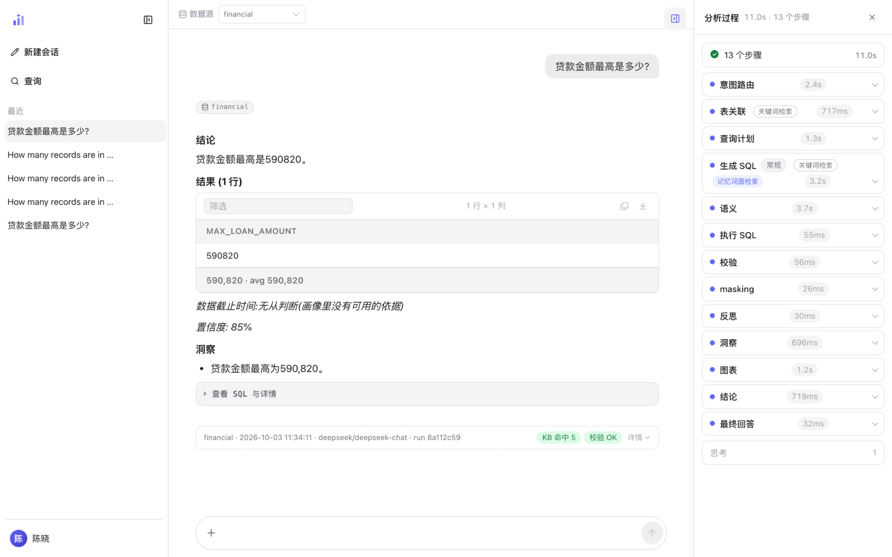
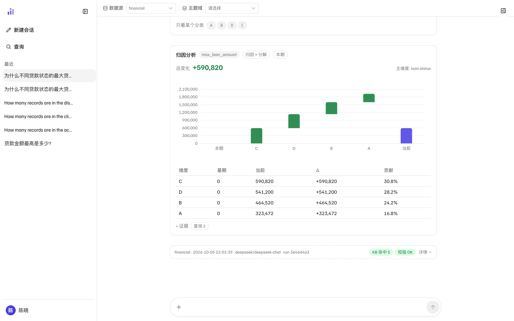
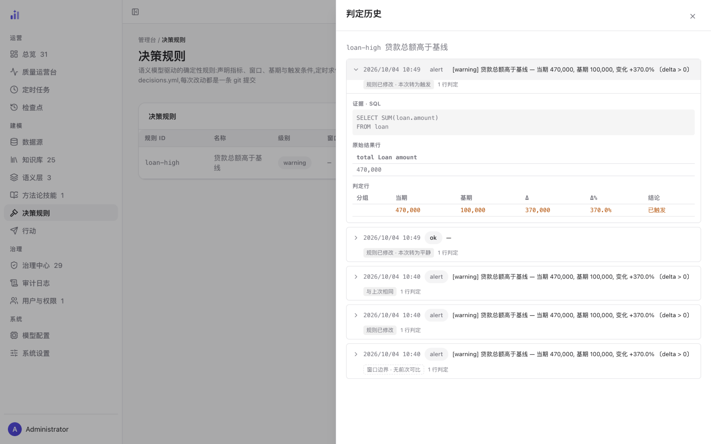
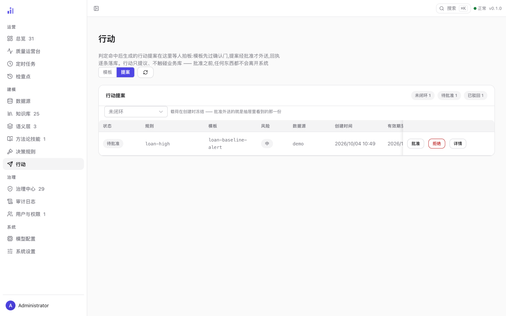

Trove 数据决策智能体
问数 · 分析 · 决策 · 行动，一条对话链路
把一句自然语言提问，变成可解释的 SQL、图表与结论； 判定规则在同一份语义模型上定时求值——季节噪声带判显著性，触发即带着证据送达； 行动发生在你的流程里（系统对业务数据保持只读），送出之后按同一套噪声带做效果验收。 Trove 把确定性押在语义模型、节点化工作流与确定性安全层上， 只把真正需要模型的那一段交给 LLM。

问数管线 28 节点（默认配置） · 8 方言适配器 · 8000+ 条测试（零网络零密钥） · 0 LLM 调用的回归门
一句话提问，一份可核对的答案
一个可自托管的问数分析 Agent：接入你自己的库，用自然语言提问，拿到 SQL、图表和一段有依据的结论。 提问与修正会沉淀进该数据源的知识库，准确率随使用增长。

1 2 3 4# 内置 BIRD 金融演示数据源，装完即可问
uv run trove --datasource demo
# 一次性提问，输出 JSON
echo "哪个地区的平均贷款金额最高?" | uv run trove-cli --datasource demo --print系统的形状——入口、编排、能力层与数据源各是什么——见 系统架构 · 全貌。
分析 · 决策 · 行动
问数回答「是多少」。这条链路还有三段——分析回答「为什么变了」，决策回答「该不该警觉」， 行动把触发变成一份等人拍板的提案，并在事后验收效果。三段与问数共用同一套纪律： 数字由确定性引擎算出来，模型只写解读，每个数字都带着可复算的证据。
分析 ——「为什么变了」
问「为什么……」「什么导致……」时，不走生成 SQL，走确定性分解：先按贡献最大的维度把总变化拆开 （贡献分解 / 比率 shift-share），再沿指标表达式下钻成驱动器树。每个数字都由可复算的查询算出来、进证据， LLM 只把结果写成一句人话。「变了多少才算变了」由稳健 z 与历史同粒度块的噪声带回答—— 超出噪声带 / 落在带内 / 判不了，三态如实；判不了绝不冒充「没变化」。

1 2 3 4- 1已声明度量——归因沿语义模型声明过的指标解析（这里是
max_loan_amount）；「归因」标卡片类型，「本期」标基线口径。 - 2总变化与主维度——一句话说清变化多大、沿哪个维度分解（这里是
loan.status）。 - 3分类瀑布与贡献表——每个分类的增减推演与贡献占比；度量可分解时，贡献表下面还会多一段沿表达式逐层拆的驱动器树。
- 4证据（查询 N）——这次归因实跑过的查询清单，当期与基期各一条，每个数字都能复算；哪一步没做成以
degraded如实记在这里。
决策 ——「该不该警觉」
阈值规则直接用语义模型自己的词汇声明：指标、维度、过滤、时间窗——声明一次，每次求值都按它执行， 判定过程零 LLM；「变了多少才算警觉」同样交给季节噪声带：超出才触发、在带内不打扰、判不了如实报。 每条判定都留着它当时判的 SQL 与原始结果行；规则文件每次改动都是一次 git 提交，判定史按规则版本分桶回评。

1 2 3 4 5- 1一条判定——时间、级别（
alert/ok/error）与一句话结论；下面的芯片是相邻 diff 的一句话。 - 2证据 · SQL 与原始结果行——判定当时真正执行的那条查询，与它判到的数字原样。
- 3判定行——分组、当期、基期、Δ、Δ% 与结论逐项列出；维度不足时照实呈现，不补造。
- 4更早的判定——逐条同样带芯片；「无前次可比」也是一枚芯片，而不是一个消失的区块。
- 5判定质量——判定史按规则版本分桶回评：触发率、行动有效 / 无变化 / 测不了的条数；样本不足不报比率。
行动 ——「接下来做什么」
判定触发不会只发一条通知了事：它冻结成一份行动提案——载荷在创建那一刻定死，之后谁批准， 外送的就是那一份；批准之前，任何东西都不会离开系统。批准后外送走 webhook / IM，回执逐条落库； 行动之后还会用与判定同一套噪声带复测「数字动了没有」——超出 / 无变化 / 判不了，三态如实。 系统自身没有写回业务库的通道，这是构造上的保证，不是配置开关。

1 2 3- 1只提议，不触碰业务库——页面自己写明的姿态：批准之前，任何东西都不会离开系统。
- 2载荷创建时冻结——批准外送的就是抽屉里看到的那一份。
- 3一条提案与行尾动作——规则、模板、风险、数据源与创建时间；批准之后才会出现「外送」等后续动作，回执与效果验收都记在这一条的详情里。
逐条展开：判定规则、因果升级与 what-if 见 判定规则； 提案、审批与效果验收见 行动与审批；分解数学与统计器械见 分解数学与驱动器树 与 统计与噪声带。
从这里开始
第一次来，按「快速上手」走一遍；想先建立心智模型，看「产品概念」；要对着界面操作，走图文指南。
为什么语义优先
大多数问数系统的准确率上限押在模型和检索上。Trove 换了一个问题： 这个数据源到底能回答什么——把这件事用一份可读的语义模型写清楚， 先划定边界，再谈生成。语义模型是生成的主视角，也是可答边界； 但它不是一道全有全无的闸门——编译结果是分级的，能答多少答多少，答不了的说清楚为什么：
PartialCompile：能解析的部分（join、过滤、分组）先权威化，
剩余组件交给生成节点按计划文本补齐，回答照常交付。
安全与可核对
问数系统要落地，安全边界不能是提示词里的一句请求。以下七条都在链路上生效—— 它们全部是代码，不是模型行为。
| 机制 | 做什么 | 位置 |
|---|---|---|
| 只读语句防火墙 | 对 SQL 做 AST 解析后判定，非只读语句在执行前被拒——不靠关键字黑名单。 | services/sql/guard.py:50 check_readonly |
| 执行代价护栏 | 执行前估算扫描行数（EXPLAIN 档，拿不到则退到元数据画像档），三路径判定：放行 / 降级加 LIMIT 执行 / 拒绝。估算不出来时走降级，而不是放行——没有下层兜底，所以这一轨 fail-closed。 | services/sql/budget.py:136 BudgetService · :236 decide |
| 执行前授权门 | 执行前判定，三道依次是 A1 主体存在 → A2 数据源在 grants 内 → A3 SQL 引用的表在语义层声明内。三道默认全拒：A1/A2 恒拒无开关；A3 默认 enforce（2026-10 切换，依据是全量快径示例 SQL 静态核验违规 0 条）。存量部署可显式写 authz.table_enforcement: warn 回退到观察档。 |
services/authz/enforcer.py:84 Authorizer · core/config.py:81 AuthzConfig |
| 组织守卫（guard 档） | 管理员把 SQL 断言写成声明式条件（select_star、join_count、has_time_predicate 等九变量闭集），在授权门之后、执行之前零 LLM 判定：明确违反即拦、回滚到生成侧收窄；判不了绝不拦——缺失基线或类型不匹配记为「判不了」，不会把否定式断言翻成假阳性。 |
services/skills/guards.py:55 GUARD_VARIABLES · workflow/nodes/execute_sql.py:61 ORG_GUARD_TAG |
| 字段级脱敏 | 结果集在进模型上下文之前按语义层声明改写（partial / hash / null）；声明了 hash 却取不到 salt 即拒绝执行，不降级为明文。 |
services/authz/masking.py:327 Masker |
| 不可信内容隔离 | 值进入模型上下文只有两条通道，两条都过同一个隔离核：命中注入短语即把整个值作废成中性标记，而不是剪掉命中的那一段（模型不能以为自己拿到的是不完整但可用的数据）。截断排在隔离之后，否则长文本里的注入串会被从中间切断、正则漏判。 | llm/untrusted.py:86 isolate_tree · prompts/loader.py:71 _isolate_vars |
| 人在环与审计 | SQL 执行前可交人过目，载荷无法识别时默认拒绝——这道门只在能读懂输入时才开。拒绝、字段改写、凭 scope 读原文三类各记一条审计（只记字段名与模式，从不记值）。 | workflow/nodes/hitl.py:65 make_hitl · agent/session.py:1857 _audit_authz |
更多机制——工具权限裁剪、模型预算护栏、以用户身份重放——见 安全边界与 Agent 能力总览的逐条展开。


怎么验证，而不是信谁的数字
这个页面不给准确率数字。问数系统的准确率高度依赖数据集、方言、语义模型完备度， 不同口径的数字放在一起没有意义——而且换个数据源就作废。所以这里给的是复现路径。
# 1. 换成你的题目集跑评测，代价敏感，按需手动跑
uv run python scripts/eval_bird.py --kb-dir <你的 KB 目录>
# 2. 拿到 baseline 后，之后每次改动都过一遍零成本回归门
uv run python scripts/eval_gate.py --baseline <旧结果> --current <新结果>
# 3. 扩展资产装上之前，先试跑再回放——同样零 LLM，--json 直喂同一道门
uv run trove validate --run --datasource <你的数据源> # 装 / 不装 双态消融
uv run trove validate --impact <包或目录> --datasource <你的数据源> # 影响面四桶差分
第 2 步是这套评测设计的关键：判定落盘之后，回归检查不调用任何模型、不碰网络，
所以它可以进 CI，也可以在你提交前顺手跑一次。同一道门也吃第 3 步的输出：
新技能、判定规则、预设装上之前，先用本机语料装前试跑与影响面回放——
和评测共用一份语料、报告直喂 eval_gate.py。完整方法见 评测与回归门。
这套设计押在哪
把确定性押在可编排的节点化工作流、多库多模型抽象与确定性安全策略层上，而不是押在模型与检索的单点强度上——所以跨厂商、跨方言下行为更可预期。
Design bet: put determinism in an orchestratable node graph, a multi-database / multi-model abstraction, and a deterministic safety layer — rather than in the strength of one model or one retriever.